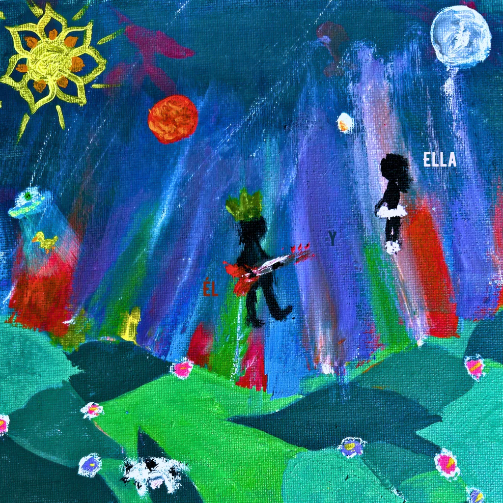
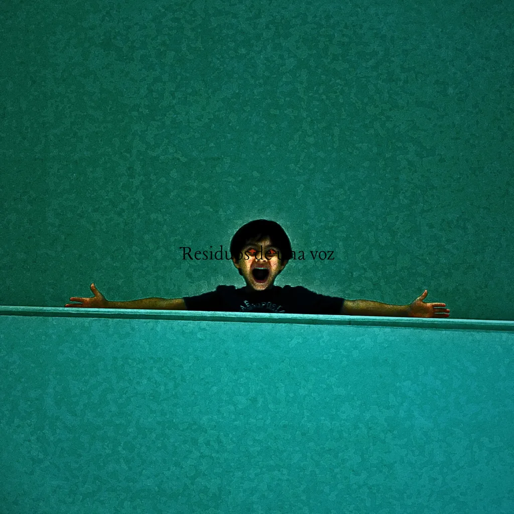
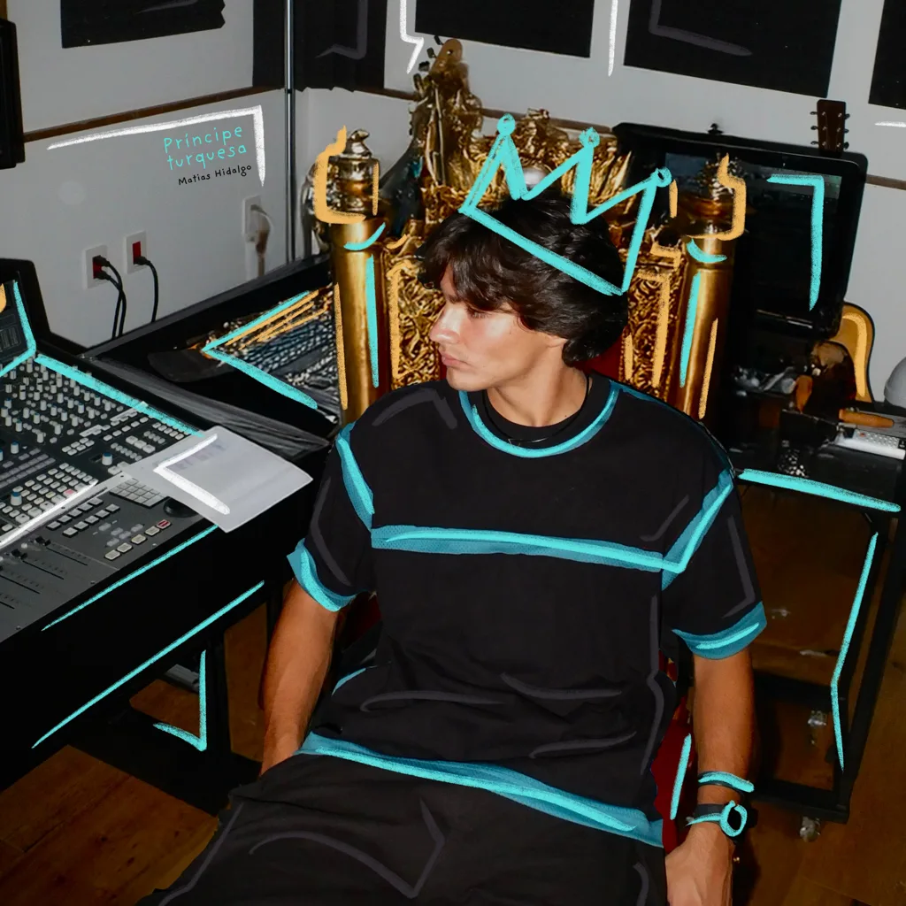
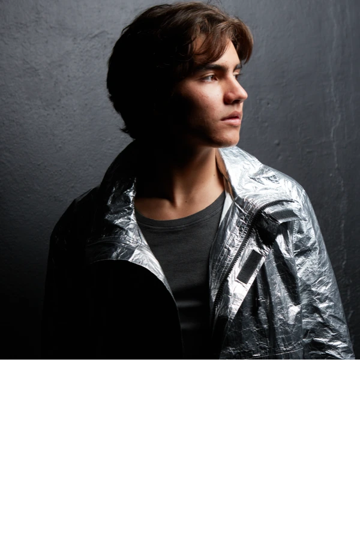

Él no sabe. Creo que ella tampoco. Si los dos supieran, yo no narraría su historia. Puedo sospechar que alguno está por terminar ahogándose en su propio poema. No sé quién tenga la razón; solo canto lo que veo.

La voz no siempre habla. A veces solo dice cosas. No tiene tiempo. Será visiones o será vestigios. Si la escuchas, ten cuidado porque puede atarte. Y no es que tenga vida propia, pero tampoco es que no la tenga.

En ciertos cuentos, hay quien muere por amor. En otros se cava una tumba y se espera encontrarlo dentro. Puede que la vida sin amar sea aun peor que amar sin vida. Un príncipe está rodeado de lujos y de espadas.
